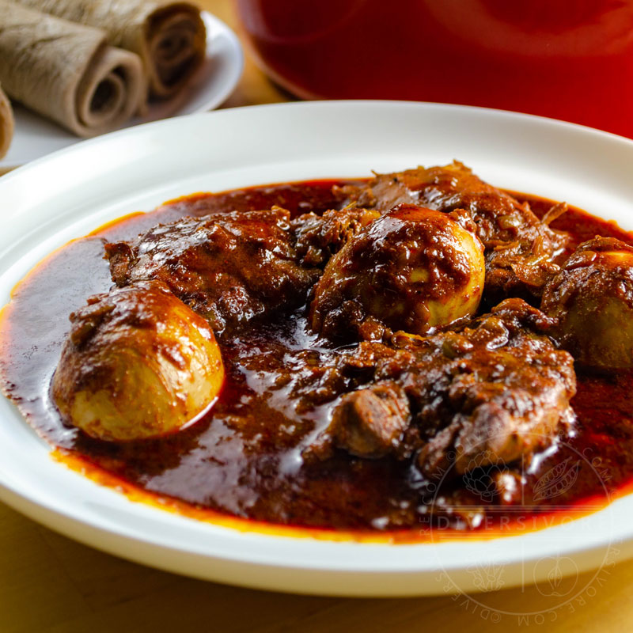

Home
Doro wot

Doro wot
Doro Wot is Ethiopia's national dish: a rich, slow-simmered, and deeply spiced chicken stew traditionally served with fermented teff flatbread called injera
Main ingredients
- chicken
- onion
- butter
- spicy
steps
- A massive amount of finely minced red onions cooked down slowl.
- Add d butter, oil, heavy amounts of minced garlic, and fresh ginger.
- Add skinless chicken pieces (traditionally a whole chicken cut into 12 pieces) cleaned with lemon juice and salt.